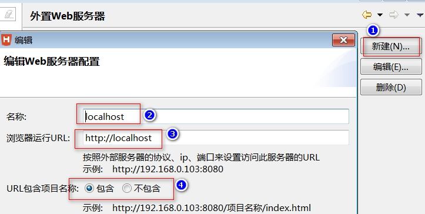
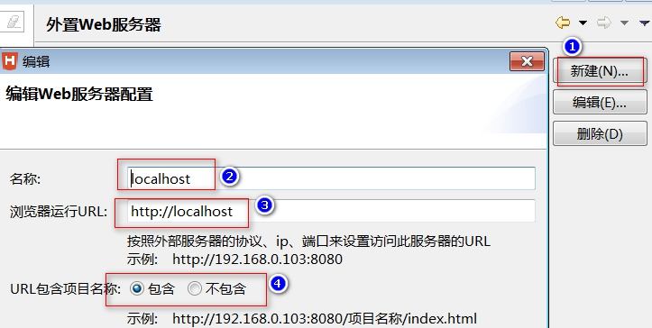

开发工具介绍与配置
Hbuilder配置开发PHP
1.下载安装Hbuilder.绿色版本,下载解压就能用.但是要注意,解压后路径必须不带中文与空格.
2.让Hbuilder支持PHP代码提示很简单:联网-->工具-->插件安装-->钩选Aptana PHP-->确认,等安装完成重启软件.
安装好后如图:

3.我们开发PHP属于服务器程序,我们配置好PHP服务器环境后需要更改Hbuilder的配置.(配置外部服务器)
第一步:

第二步:
 第三步:
(注意第三步中的如下图④:如果我们以后用新建WEB项目做项目,需要点包含,如果打开文件夹做项目,则点不包含).我们以后统一用新建WEB项目的方式(④选包含)

第三步:
(注意第三步中的如下图④:如果我们以后用新建WEB项目做项目,需要点包含,如果打开文件夹做项目,则点不包含).我们以后统一用新建WEB项目的方式(④选包含)

第四步:再打开设置WEB服务器(重复第一步).把HTML与PHP都放在外部服务器中访问.

4.新建WEB项目
文件(菜单)-->新建-->WEB项目
第一步:
第二步:
5.从别人电脑COPY或导入一个项目怎么做?把一个目录变成Hbuilder的WEB项目.
文件-->打开目录-->然后如下图(项目名建议别改,保持默认就是目录名)
zend studio 常用基本配置
Zend studio 13.6.1 下载安装与配置
注意:安装的第一步要选择安装目录.options按扭记得点击.
1.设置项目默认编码,不然以后每次新建项目都是默认GBK编码.


2.改默认PHP版本为自己所需.以免每次新建项目时选择PHP版本,更大的作业就是导入三方软件的项目时用
3.自动提示延时是200ms,感觉太慢了,改成50更合适,当然不要改0,不然电脑差了有点卡.还有,新手打代码慢的就有200行了,不需要改.
4.如果开发中感觉字体不习惯或中文显示异常的,
依次进入Window——Preferences——General——Appearance——Colors and Fonts——Basic——Text Font进行修改.
有些电脑用西欧语言会中文显示特别小.
5.PHP开发需求设置之默认服务器
下一步后要注意,名字随便起,但apache配置文件(httpd.ini)的路径一定要对.不要填错了.
下一步,要注意xDebug的配置要写对,方便以后调试.
- 从外部导入三方软件开发的项目时操作,才会有代码提示
以导入hbuilder项目为例:

一般导入进来就OK了,但如果没有如下文件等时,或PHP版本不对时,我们要进行操作
选择项目右键

有点小插曲,Add php…..看不到了.因我配置了之后…注意就好…..
如果项目中的语言版本不对,则如下配置:


当然,项目的字符编码也在这里面设置
注:zend studio是基于eclipse二次开发的,所有配置都保存在工作工间中,一旦删除工作空间,则什么配置都失效了.如我的zend studio的工作空间位置是: C:\Users\ADMIN\Zend\workspaces\DefaultWorkspace 一般软件启动时可以看到.更改或删除工作空间后请重新配置.
Pphstorm2017.2.4 基本配置
Phpstorm2017.2.4下载安装配置
1. 配置浏览器访问,地址不正确
配置如下

注意项目名称要对.不然浏览器找不到地方

要注意设置为默认,成为了默认后②处是不可用灰色状态.
-
解决PHP调试问题
下图注意5处别乱填,与PHP配置文件中的XDEBUG配置项有关联
下面回到开发主界面,

打开php.ini进行配置xdebug,具体如下:记得配置好后重启apache[XDebug] xdebug.profiler_output_dir="D:\phpStudy\tmp\xdebug" xdebug.trace_output_dir="D:\phpStudy\tmp\xdebug" zend_extension="D:\phpStudy\php\php-5.4.45\ext\php_xdebug.dll" xdebug.remote_enable = On xdebug.profiler_enable = off xdebug.profiler_enable_trigger = off xdebug.show_local_vars=0 xdebug.remote_autostart = 0 xdebug.idekey = "PHPSTORM"
还没有完,浏览器我用chrome还要进行配置,先安装两插件
配置插件

恭喜,总算可以调试了,如下图:

经历了这么多,感觉还是zend studio在调试方面才是王道.只不过写HTML还是国产的hbuilder实在,有边写边看功能.在这两个工具下,实在找不到phpstorm有什么优点………….